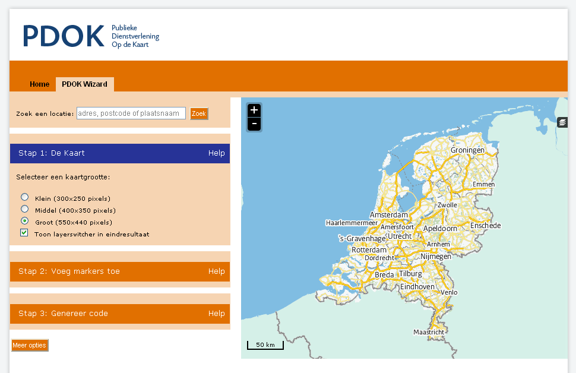
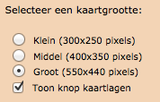
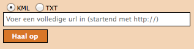

Zoek een locatie
Voordat u een kaart voor uw website gaat maken, zult u eerst naar de plaats op de kaart willen gaan waarvoor u de kaart wilt maken. Dit kan door direct in de kaart in– en uit te zoomen met behulp van de knop  en de kaart naar de gewenste plaats te verschuiven. Om de kaart te schuiven, dient u in de kaart te klikken, de linkermuisknop ingedrukt te houden en met de muis te bewegen.
Een snellere manier om naar de gewenste plek te gaan, is door het invoeren van een adres, postcode of plaatsnaam in het zoekschermpje.
en de kaart naar de gewenste plaats te verschuiven. Om de kaart te schuiven, dient u in de kaart te klikken, de linkermuisknop ingedrukt te houden en met de muis te bewegen.
Een snellere manier om naar de gewenste plek te gaan, is door het invoeren van een adres, postcode of plaatsnaam in het zoekschermpje.

De kaart zoomt direct naar de opgegeven locatie. Wanneer er meerdere resultaten zijn gevonden, wordt een keuzelijstje geopend:

Door op één van zoekresultaten te klikken, zoomt de kaart in op de locatie.
Stap 1: De Kaart
Kies de grootte van de kaart
In stap 1 kunt u instellen hoe groot u uw kaart wilt hebben. U kunt kiezen tussen de formaten klein (300*250 pixels), middel (400*350 pixels) en groot (550*440 pixels). Het kaartbeeld aan de rechterzijde wordt direct aangepast aan uw keuze. Het voorbeeldkaartje aan de rechterzijde komt hiermee exact overeen met het eindresultaat.
De “Toon knop kaartlagen” staat standaard aan en heeft betrekking op het wel of niet beschikbaar zijn van de knop aan de rechterkant van de kaart
 . Met deze knop is het mogelijk om eventuele extra kaartlagen aan of uit te zetten.
. Met deze knop is het mogelijk om eventuele extra kaartlagen aan of uit te zetten.
Voor het toevoegen van extra kaartlagen zie optie “extra kaartlaag toevoegen”.
Stap 2: Voeg markers toe
In stap 2 kunt u één of meerdere markers toevoegen. Met een marker wordt bedoeld een punt, een lijn of een vlak. In stap 2 is het ook mogelijk om de markers te wijzigen of te verwijderen. De markers kunnen ook uit een bestand worden ingelezen. Het aantal markers dat toegevoegd kan worden, is onbeperkt.
Voeg een marker toe via de kaart
Door de eerste optie aan te vinken, wordt een lijst geopend met markers. Bovenaan de lijst staan de markers voor het prikken van punten, middenin de lijst de markers voor het trekken van de lijnen en onderaan de markers voor het intekenen van de vlakken. Na het selecteren van een marker voor een puntsymbool kan de gewenste positie van de marker in de kaart worden geprikt (voor een punt) of getekend (voor een lijn of een vlak). Het afsluiten van een vlak of een lijn gebeurt met een dubbele muisklik. Nadat de marker is aangebracht kan deze voorzien worden van een titel en een omschrijving in het tekstvak dat geopend is. In de tekst kunnen ook URL links worden opgenomen bijvoorbeeld < a href = "http://www.theaterdemusketon.nl">Theater de Musketon< /a >

De tekst kan bewaard worden met de knop “Opslaan tekst”. De tekst kan achteraf nog gewijzigd worden bij de functie “wijzig een marker op de kaart.” Indien gewenst kan de marker direct verwijderd worden met de knop “Verwijderen marker”.
Wijzig een marker op de kaart
Door de optie “wijzig een marker op de kaart” aan te vinken kunnen bestaande markers verplaatst of verwijderd worden. Dit kan door na het aanvinken van de optie “wijzig een marker op de kaart” de marker (punt, lijn of vlak) in de kaart te selecteren. De geometrie van de marker kan vervolgens worden aangepast. Ook kunnen de titel en de omschrijving van de marker aangepast worden. De tekstwijzigingen worden opgeslagen met de knop “Opslaan tekst”.
Naast het wijzigen van de marker kan deze ook verwijderd worden met de knop “Verwijderen marker”.
Marker uit URL, bestand of tekst
Door de optie “Marker uit URL, bestand of tekst” aan te vinken kunnen markers ingelezen worden die volgens een bepaalde standaard zijn gedefinieerd. Er worden twee standaarden ondersteund:
- KML
- TXT = Y-X Bestand
KML
Voor meer informatie over het KML formaat zie deze website.
TXT
Het gaat hierbij om een YX-tekstbestand met coördinaten in RD. Het scheidingsteken is een tab (hieronder aangeduid als
In geval van RD is de volgende input vereist (inclusief koptekst):
point title description
517000 117960 tekst1 omschrijving1
517200 117200 tekst2 omschrijving2
Let op, in de hierbovenstaande tabel moeten de gegevens door een TAB-gescheiden worden!
Via URL

Kies het type definitie (KML of TXT) en geef de URL waar het bestand met markerdefinities zich bevindt. Klik daarna op "Haal op ". De markers die in het bestand zijn gedefinieerd worden direct op de kaart ingetekend.
Via Copy/Paste
Indien de markerdefinities zich in een bestand bevinden dat niet via een URL kan worden benaderd dan kunnen de markerdefinities handmatig via copy/paste aan de kaart worden toegevoegd.
Kies allereerst het type definitie (KML of TXT). Kopieer de markerdefinities uit het bronbestand naar de markerdefinities in de tekstbox.
De markerdefinities kunnen uiteraard ook met de hand worden ingevoerd en daarnaast kunnen de gekopieerde markerdefinities worden aangepast voordat ze in de kaart worden opgenomen. Kies “Opslaan om de markers aan de kaart toe te voegen. De markers worden direct op de kaart ingetekend.

Voorbeeld van tekst die hierin kan worden gekopieerd (scheidingsteken is een tab):
point title description
517000,117960 tekst1 omschrijving1
518000,117200 tekst2 omschrijving2
Na in het toevoegen kunnen de markers met ‘Wijzig een marker op de kaart’ worden aangepast of verwijderd.
Stap 3: Genereer code
Wanneer deze stap gekozen wordt dan wordt code gegenereerd voor:1. een URL link
2. een iFrame,
3. een Object tag
4. HTML en JavaScript code voor in de head en body sectie van een HTML pagina
Naar wens kan één van de vier gegenereerde opties gebruikt worden. Functioneel leveren zij alle hetzelfde resultaat. Aan de eerste drie opties zit echter wel een beperking. Deze kunnen niet gebruikt worden wanneer de lengte van de URL link de maximum toegestane lengte van een URL in de gebruikte browser overschrijdt. De lengte is verschillend per type browser. Wanneer de lengte van de URL langer is dan 2000 karakters dan wordt dat door PDOK Kaart gemeld. De lengte van de URL wordt bepaald door het aantal markers, de grootte van de titel en omschrijving van de markers en het aantal kaartlagen.
URL link
De gegenereerde URL link kan direct in het navigatieveld van een willekeurige browser worden gekopieerd. Daarnaast kan de link direct per e-mail verstuurd worden. Kies hiervoor het mail icoontje
 . Er wordt een nieuw e-mail bericht aangemaakt met in de body de URL link. Pas de e-mail aan en verstuur deze. De ontvangers kunnen op de URL link klikken waarna de gedefinieerde PDOK Kaart wordt getoond. Bij de URL link wordt de kaart altijd beeldvullend getoond.
. Er wordt een nieuw e-mail bericht aangemaakt met in de body de URL link. Pas de e-mail aan en verstuur deze. De ontvangers kunnen op de URL link klikken waarna de gedefinieerde PDOK Kaart wordt getoond. Bij de URL link wordt de kaart altijd beeldvullend getoond.iFrame of Object tag
Kopieer, afhankelijk van de wens of er gebruik gemaakt moet worden van een iFrame of een HTML object, de gegeneerde code en plak deze in het HTML document waar de kaart moet worden opgenomen. De grootte van de getoonde kaart is afhankelijk van de keuze die gemaakt is in stap 1.
HTML en JavaScript
De HTML en JavaScript optie kan als basis gebruikt worden door meer geavanceerde gebruikers om de getoonde kaart naar de eigen behoefte aan te passen. De gegenereerde code van de Head en de Body sectie van een HTML pagina worden gegenereerd. Deze code dient in de betreffende sectie te worden gekopieerd. Bij deze optie wordt geen rekening gehouden met de keuze die gemaakt is in Stap 1: Kies de grootte van de kaart. Men dient zelf maatregelen te nemen om de kaart grootte naar eigen wens weer te geven.
Optie: Extra Kaartlaag toevoegen
Met deze extra optie kunnen er voorgedefinieerde PDOK kaartlagen of andere WMS of WMTS kaartlagen toegevoegd worden aan de kaart.De kaartlagen worden op elkaar gelegd in de volgorde waarin zij toegevoegd worden. De eventueel toegevoegde markers liggen altijd bovenop de bovenste kaartlaag en zijn dus altijd zichtbaar.
Het aantal kaartlagen dat toegevoegd kan worden is onbeperkt (alleen voor optie 4 van “genereer code”).
De volgorde van de kaartlagen is niet te wijzigen en een individuele kaartlaag is niet te verwijderen. Met de optie ‘Verwijder alle lagen” kunnen echter wel alle kaartlagen, behalve de achtergrond kaart en de markers, verwijderd worden.
Voeg een standaard kaartlaag toe

Met deze optie kunnen voorgedefinieerde PDOK kaartlagen worden toegevoegd. Selecteer een kaart uit de lijst en kies “Voeg toe aan kaart”. De geselecteerde kaart wordt aan de kaart toegevoegd en het resultaat is direct zichtbaar. Let wel dat bepaalde PDOK kaartlagen niet op alle schaalniveaus zichtbaar zijn.
Voeg een WMS kaartlaag toe

Met deze geavanceerde optie kunnen eigen WMS kaarten worden toegevoegd. Typ de URL van de WMS webservice in het veld “URL van de WMS” en één of meerdere kaartlagen, gescheiden door een komma, in het veld “Kaartlagen van de WMS”.
Kies daarna voor “Voeg toe aan kaart” om de kaartlagen toe te voegen aan de kaart. Om deze optie succesvol te kunnen gebruiken dient men kennis te hebben van WMS webservices.
Voeg een WMTS kaartlaag toe

Met deze geavanceerde optie kunnen eigen WMTS kaarten worden toegevoegd. Typ de URL van de WMTS webservice in het veld “URL van de WMTS”, de naam van de kaartlaag in het veld “Kaartlaag van de WMTS” en de naam van de matrix set in het veld “Matrixset van de WMTS”. Kies daarna voor “Voeg toe aan kaart” om de kaartlaag toe te voegen aan de kaart.
Om deze optie succesvol te kunnen gebruiken dient men kennis te hebben van WMTS webservices.
Verwijder alle lagen
Met deze optie worden alle toegevoegde kaartlagen verwijderd.
Noot:
Sommige kaarten zijn niet op elk zoomniveau beschikbaar. Vaak moet er ingezoomd worden voordat de kaart getoond wordt. Het kan dus voorkomen dat het lijkt alsof een kaart niet toegevoegd is. Om na te gaan welke kaartlagen er voorkomen kan gebruikt worden gemaakt van de kaartlagenknop

die zich rechts bovenin de kaart bevindt (tenminste als deze in stap 1: Toon kaartlagen knop niet uitgevinkt is).
Kies deze knop en de aanwezige kaartlagen worden getoond.
Optie: Kaartprikker functionaliteit toevoegen
Met de geavanceerde kaartprikker functionaliteit heeft u de mogelijkheid om bezoekers van uw website, waarin u een PDOK Kaart hebt opgenomen, de mogelijkheid te geven een marker op de kaart te zetten (prikken). Deze marker kan een punt, lijn of vlak zijn. Tevens kunt u aangeven tussen welke zoomniveaus de bezoeker mag prikken.
Selecteer een teken object

Geef aan welke geometrie uw bezoeker gaat gebruiken voor het intekenen van een marker en geef daarna aan waar de gegevens van de getekende geometrie in de HTML pagina moet worden 'opgeslagen' zodat deze voor u beschikbaar is voor verdere verwerking.

Voor een punt(xy) dienen de namen van de attributen voor de waarde van de x en de y coördinaat te worden opgegeven.

Voor een punt(wkt), lijn(wkt) en een vlak(wkt) dient u de naam van het attribuut op te geven waarin de wkt informatie wordt opgeslagen. Voor meer informatie over het wkt formaat zie http://en.wikipedia.org/wiki/Well-known_text

U kunt aangeven tussen welke zoomniveaus een bezoeker van uw website de marker in de kaart mag tekenen.
Om de kaartprikker optie succesvol te kunnen gebruiken dient men (basale) programmeerkennis te hebben.